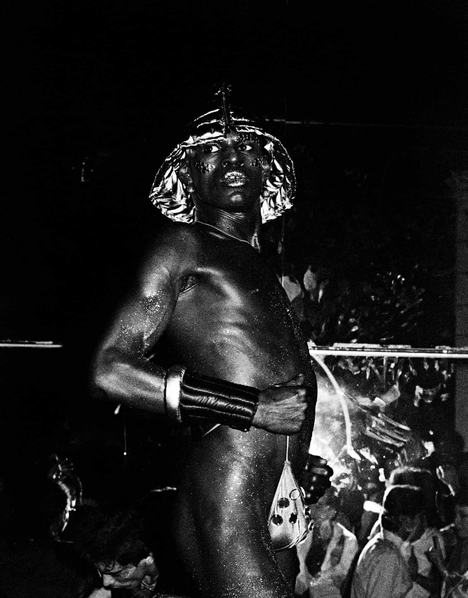
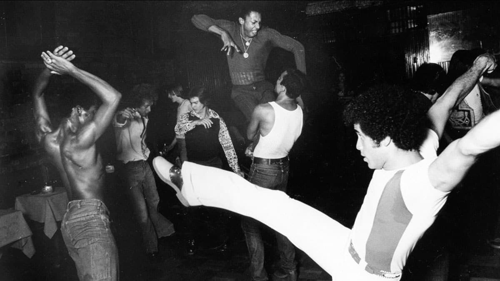
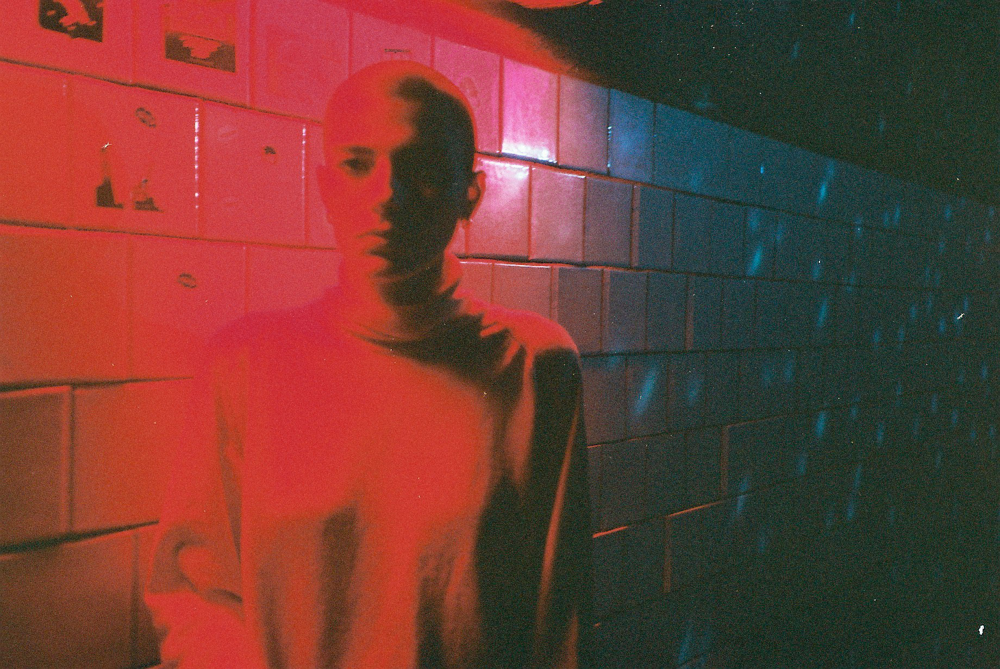
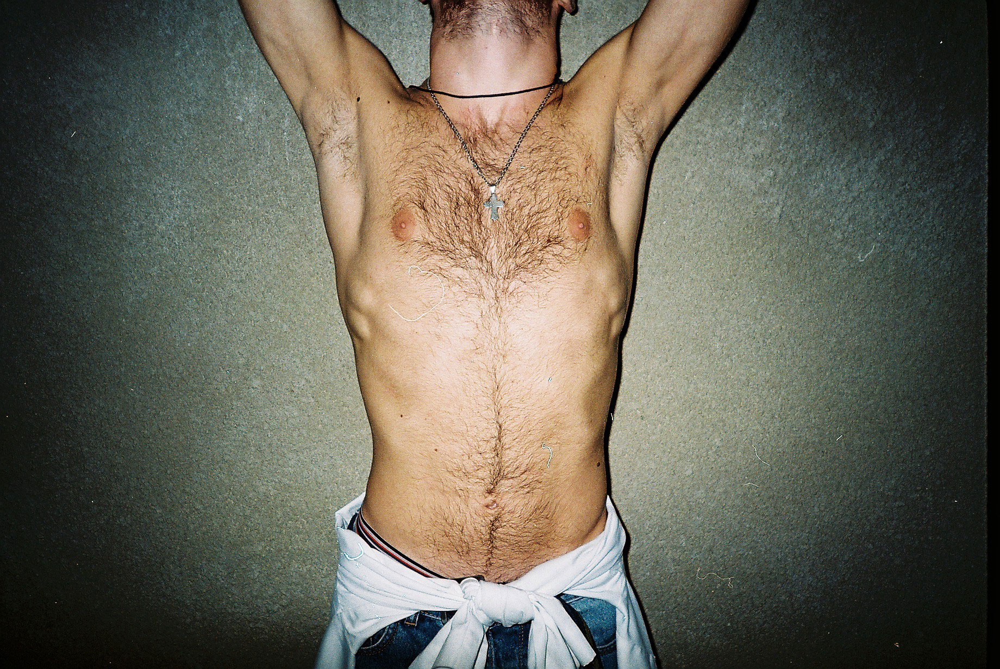
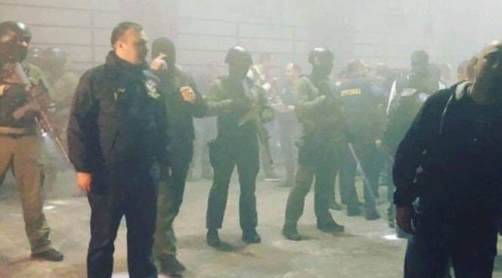
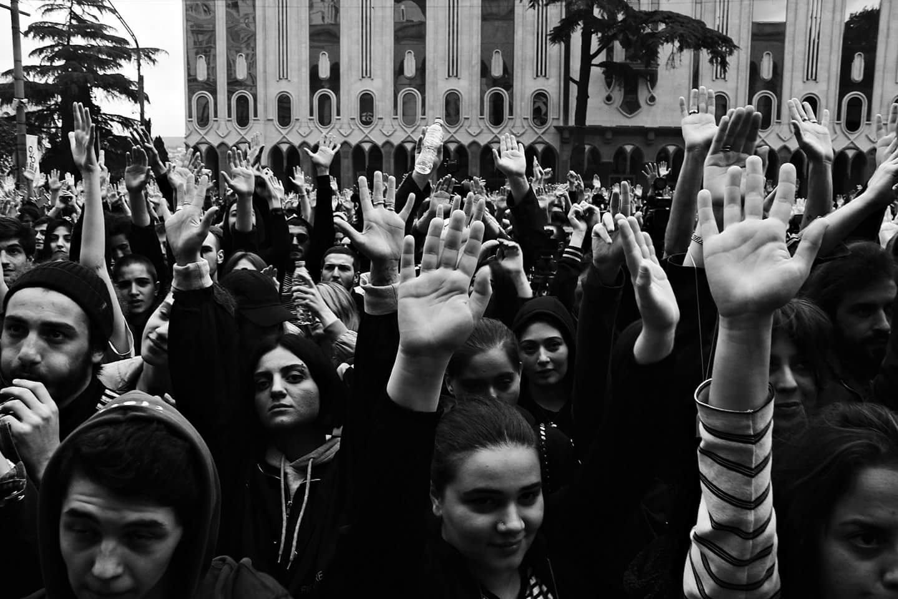
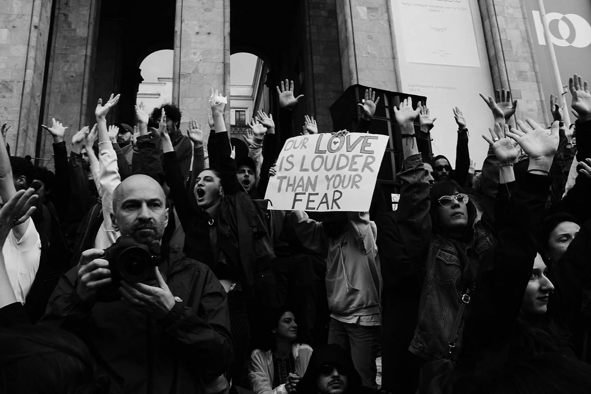

Rave Revolution Similar to the Continental Baths and Stonewall Inn that provided safer spaces Bassiani and Café Gallery are unmistakably the victims of police raids. The police demonstrated an excessive use of authority towards harmless clubbers in May 2018. A video by BBC News shows how hundreds of masked policemen, armed with machine-guns raided club Bassiani and Café Gallery. The police detained 70 people including one of the co-founders of Bassiani, Zviad Gelbakhiani, near the club. According to the government, it was part of a crackdown on drugs. In response, within hours, thousands of people had gathered on the square in front of Georgia’s parliament building to fight for freedom and equality.[41] Kikonishvili points out that the main reason for the attack was an idealogical war. Bassiani was becoming strong enough for the government and conservative part of the country to become a headache. The progressive communities were speaking out against the government and problems within society. The government silenced the people, instead of listening to them.[42]
Soon the protest turned into a two days rave for social change. DJs, from the label Giegling, started to play on a sound system that activists placed on the square. Sabelashvili explained how the organisers of a queer night shut down the club out of solidarity. Attendees in beautiful dresses and high heels went to the parliament to join the frontline of the protest. It was like a flashback of the Stonewall riots.[43] According to curator Bogomir Doringer (Ph.D. candidate, Artistic Research, University of Applied Arts, Vienna), when people come together to dance collectively, they influence one another's movements through their physical and emotional bond. In May 2018, thousands of ravers gathered in the centre of Tbilisi, Georgia, to protest against the police raids of two well-known clubs: ‘Café Gallery' and, internationally renowned for its activist activities, 'Bassiani'. The protesters danced for two days in front of the parliament and ultimately extracted an official apology from the government.[44] Doringer draws the parallel between the protest of 2018 in Georgia and the story of the book Time to Dance, a Time to Die. “In this story, the people entered an euphoric collective state of trance and danced for days. It was a dancing plague in 1518. They danced without an end in sight, until the society recognised the oppressive and unequal circumstances they lived under. This is when the dance stopped.”[45]
Despite the nonviolent resistance from the protesters, the atmosphere changed when far-right groups turned up in force. In the video of BBC News, we can hear George Chelidze, the leader of the fascist group Georgian National Unity, saying the protest was offensive because it was leftish provocation. The protest was not only about the police raid, the protesters demanded drug legalisation and queer propagandism.[46] Sabelashvili states that: “The counter-protesters are now used against us by the same political system. Maybe they need our help and guidance, to understand our story too, and then we can talk. But it takes time.”[47] Dance floors have often reunited enemies and could be a start of breaking these barriers. In the same way, as on the dance floors of New York, Chicago and Detroit, dancing became a political act.The protest was stopped after the Interior Minister apologised to the crowd, which was greeted with an euphoric applause. During the rave protest in front of the parliament, a decision to de-escalate the situation was made between Interior Minister Gakharia and members from White Noise, Bassiani and Human Rights Education. The decision was based on two promises. Gakharia promised to establish the legality of this police operation and illegal detentions or arrests will be investigated. And in the nearer future, concrete steps will be made to finish the reformation of drugs policies. Some protesters deeply regret this decision. In spite of the pressure thousands of ravers put on the authorities, and the promises from the Interior Minister, two months later the Georgian government puts the drugs policy debate aside.
The protests were led by the White Noise Movement which, advocates drug decriminalisation since 2013. The Georgian police regularly chase clubbers to let them take urine tests. The movement takes the responsibility to support arrested people and educate clubbers about their rights.[48] According to a report commissioned by the Council of Europe, Georgia has the highest prison population in Europe and is among the countries with the largest proportion of people imprisoned for drug offences.[49] In an interview Sabelashvili, tells his story of going to jail nine years ago for smoking weed. During that time he was an LGBTQ+ activist and his fellow activists judged him. Back then, people associated drugs with masculine behaviour, people who bully and act violently. This stigma of going to jail for weed usage made him feel ashamed “The reaction I encountered from educated and open-minded people around me, shocked me. I had hard times going through that period. Also, it let me think and learn a lot. Basically, no one wanted to hire me.”[50] Krushinka claimed that over 300,000 people—almost 10% of Georgia’s population have been street tested for drug use over the past seven years. People get 6-8 years in prison for the scanty number of substances. Or a fine of 30-40 thousand lari (euro 12,000—15,000) is your buyout. The help of White Noise Movement avoided multiple prison sentences and released hundreds of prisoners. As a tactic against the authorities, the movement creates extensive hype and media attention.[51]
Bibliography
A. Armstrong, Elizabeth and Suzanna M. Crage. “Movements and Memory: The Making of the Stonewall Myth.” American Sociological Review 71, (October 2006): 724–751. https://doi.org/10.1177/000312240607100502
A. McLaughlin, Katie, Mark L. Hatzenbuehler and Katherine M. Keyes. “Responses to discrimination and psychiatric disorders among black, Hispanic, female, and lesbian, gay, and bisexual individuals.”Am J Public Health 100, no 8. (August 2010): 1477–84. https://doi.org/10.2105/AJPH.2009.181586
Aaronson, Beatrice. “Dancing Our Way out of Class through Funk, Techno or Rave.” Peace Review 11, no 2. (June 1999): 231–36. https://doi.org/10.1080/10402659908426258
Albiez, Sean. “Post-soul futurama: African American cultural politics and early Detroit techno.” European Journal of American Culture 24, no.2 (August 2005): 131–152. https://doi.org/10.1386/ejac.24.2.131/1
Brewster, Bill and Frank Broughton. Last Night a DJ Saved My Life. London: Grove Press, 2000.
Echols, Alice. Hot Stuff: Disco and the Remaking of American Culture. New York: W.W. Norton & Company, 2010.
Garcia, Luis-Manuel. “Can you feel it, too?” :intimacy and affect at electronic dance music events in Paris Chicago and Berlin” PhD diss., University of Chicago, 2011.
Krushinka, “Georgian drug wars–how the activists fight against repressive drug policy in Georgia,” 34 Mag, April 20, 2017, https://34mag.net/en/post/georgian- drug-wars
Lawrence, Tim. “I Want to See All My Friends At Once’’: Arthur Russell and the Queering of Gay Disco.” Journal of Popular Music Studies 18, no. 2(August 2006): 144–166. https://doi.org/10.1111/j.1533-1598.2006.00 086.x
Lawrence, Tim “Love Saves the Day: David Mancuso and the Loft.” January 5, 2014. http://www.timlawrence.info/articles2/2014/1/4/love-saves-the-day-david-mancuso-and-the-loft-placed-2007. Lawrence, Tim. “From Disco to Disco: New York’s Global Clubbing Influence.”Red Bull Music Academy Daily, June 9,2013. daily.redbullmusicacademy.com/2013/06/from-disco-to-disco
Lawrence, Tim. Love Saves the Day: a History of American Dance Music Culture, 1970–1979. Durham: Duke University Press, 2004.
R. Hutson, Scott. “Technoshamanism: SpiritualHealing in the Rave Subculture.” Popular Music and Society 23, no 3. (July 1999): 53–77. https://doi.org/10.1080/ 03007769908591745
Rosenthal, Moran. Queerhana. Berlin: Neue Gesellschaft für Bildende Kunst, 2017.
Schaub, Christoph. “Beyond the Hood? Detroit Techno, Underground Resistance, and African American Metropolitan Identity Politics.” Forum for Inter-American Research 2, no 2. (October 2009). http://interamerica.de/volume-2-2/schaub/
Shapiro, Peter and Simon Reynolds. Modulations:A History of Electronic Music: Throbbing Words on Sound. New York: Distributed Art Publishers, 2000.
Sicko, Dan. Techno Rebels: the Renegades of Electronic Funk. Detroit: Wayne State University Press, 2014).
Members of the queer community continue to face inequality and violence. From New York’s dance floors in the 70s to Georgian club Bassiani today, dance floors form community centres to resist oppression and violence. However, a large number of representations of underground club culture fail to show the meaningful aspect of hedonistic raves. Dance floors that form platforms for progressive movements are victims of police raids. Places where people criticise society and promote alternative values and cultures, can be a political enemy. Therefore, the clubbing community needs to reclaim their spaces and fight for them. Understanding the value of these safer environments helps in this fight. Discussing the impact dance floors have on marginalised communities can influence like-minded people. The research argues that dance floors go beyond hedonistic playgrounds and function as platforms to resist oppression and violence the queer community faces. The argumentation is derived from interviews with key activists and artists for whom nightlife forms an essential role in their lives. The study introduces dance floors from the past that have been fundamental for queer underground nightlife. It focuses on the role Georgian club Bassiani plays in an environment with a low acceptance towards the queer community. These results indicate that dance floors can go beyond hedonism and play a crucial roles in the lives of these people. On this basis, it is recommended for people active in underground club culture, to act responsible towards representations. This can be accomplished by taking a distance from the fashionable representations of queer communities. Further research could be undertaken to identify other factors that could help defending these safer environments.
At an age of 18, I experienced a difficult coming out. I felt the need to live up the expectations of my heteronormative surrounding. From playing in metal bands and in my family this seemed the norm. It was not until I danced on certain dance floors, that I started to accept myself and went on a self-discovery. These places showed me acceptance and a life alternative to the norms I grew up with. This experience brought me to the study of the social and political factors of dance floors. The aim of the research is to demonstrate the importance of these places. It presents the urgency, and value of places where members of the queer community can feel safer. The interest in the social and political factors of dance floors and it's positive impact on society, increased in recent years.
Members of the queer community continue to face violence and inequality.[1] This has a high psychological and social impact on these people.[2] Safer environments to break free from violence and oppression are urgent. A place to form a resistance and have absolute freedom of expression.
1 “LGBT Rights,” Human Rights Watch, accessed October 6, 2018, link
2 Katie A. McLaughlin, Mark L. Hatzenbuehler and Katherine M. Keyes, “Responses to discrimination and psychiatric disorders among black, Hispanic, female, and lesbian, gay, and bisexual individuals,” Am J Public Health, (August 2010): 100(8): 1477–84, link
Dance music born out of queer communities

Respecting the marginalised black and Latino queer communities dance music originates from is important. The commercialisation of dance music makes the influence of these people invisible. During my first nightlife experiences at, Amsterdam’s famous gay street Reguliersdwarsstraat, I lacked knowledge of queer communities and their influence on nightlife. This is a fragmented version of the history. Think of it as remembering the highlights of a sweaty club night. New York During the 70s in New York a large number of men expressed their gay identity through disco. Some experienced a trip of self-discovery on these dance floors. They discovered their same-sex partner preferences, while others already knew this. Mixed crowds of bisexual and straight men, lesbian women and straight admirers of gay men, joined them. A dance of new liberation under the guidance of disco’s soul/gospel inspired funky grooves emerged.[3] New York's police persecuted people for being black, Latino and gay during this time. These people had no way to express themselves freely, without a heavy backlash from the authorities.[4] Hooking up with another man was a high-risk affair. In 1969, the Los Angeles Police Department made 3,858 arrests categorised under crime used to prosecute gays.[5] Only when the police came, the dancing abruptly stopped. Clubs and DJs from this period are fundamental for gay culture and the creation of club culture as we experience it today. Before introducing these clubs a step back to the Stonewall Riots and the Continental Baths is necessary.
Bill Bernstein, Studio 54 (1979)
Violent riots between police and bar patrons erupted on the evening of June 28, 1969. The police raids on New York's Stonewall Inn gay bar triggered the riots. Raids of homosexual bars were common in New York and other American cities during the 60s. Instead of accepting humiliating treatment, the bar patrons fought back this time. Although Stonewall did not mark the origin of gay liberation, it played a tremendous role in gay culture and nightlife.[6] The Stonewall protests changed the face of nightlife and triggered gay liberation on the dance floor, all the great clubs that followed could focus on gay crowds and let guys dance together. The event did not drastically change the freedom of the queer community in public yet. The liberation shifted towards underground nightlife.[7] One year earlier, in 1968, Steve Osrow founded The Continental Baths, a gay bathhouse in New York. It acted both as a hedonistic playground and a community centre for the queer community. The police raided the bathhouse over two hundred times. Continental Baths collected over 250,00 signatures for a petition to change New York City’s outdated laws. The petition resulted in the repeal of laws against homosexuality in New York and marked a victory in gay liberation. Two gay African-American men, Frankie Knuckles and Larry Levan first visited the club in 1973 and developed their DJ skills here.[8]
8 Dan Gentile, “Electric Relaxation: The Continental Baths birthed NYC disco and the careers of Frankie Knuckles and Larry Levan,” Wax Poetics, May 4 2016, link
6 Elizabeth A. Armstrong and Suzanna M. Crage, “Movements and Memory: The Making of the Stonewall Myth,” American Sociological Review, (October 2006): 71: 724–751, link
7 Maestro. Directed by Josell Ramos. Artrution Productions, 2003.

Courtesy of Duke University Press, The Loft
Shortly after the Stonewall riots David Mancuso held his first private house parties at his loft in 1970. The Loft was one of the first dance floors where gay men could safely come together in a racially, economically and sexually mixed crowd. David’s vision was to offer his guests a way to break free from the violence and oppression of reality.[9] Dancers partied under sound vibrations from one of the best sound systems. David fine-tuned the sound system throughout the night. The place was not stated as an official club, for example, alcohol was not being sold. Therefore, closing times did not exist, and parties stretched at least from midnight until afternoon. The Loft became an influential example for all the clubs that followed.[10] Around the same time, entrepreneurs Seymour and Shelley took over the discotheque called ‘The Sanctuary’. An old German Baptist church immersed into the first public nightclub that welcomed gay dancers.[11] Nicky Siano, a Loft regular, set up his own The Loft inspired venue in 1973, called the Gallery. According to Mancuso, no other place came as close to the Loft.[12] Around 1977, Both Larry Levan’s and Frankie Knuckles’ popularity exploded during their DJ residencies at the Gallery. Before, they both worked at the club. Knuckles DJ career took bigger steps when he became a resident DJ at Paradise Garage. A new club between 1977 and 1987 in an underground garage. Together with a massive devoted following of black and Latino members of the queer community, Paradise Garage influenced dance music and culture. The influence spread both nationally and internationally. The club reveals the birthplace of the modern nightclub.[13] Here disco music transitioned into house music, under the guidance of one of worlds greatest mixer, Larry Levan[14]
9 Bill Brewster and Frank Broughton, Last Night a DJ Saved My Life (London: Grove Press, 2000), 120–122.
10 Tim Lawrence, “Love Saves the Day: David Mancuso and the Loft,” January 5, 2014, link 11 Tim Lawrence, “From Disco to Disco: New York’s Global Clubbing Influence,” Red Bull Music Academy Daily, June 9,2013, link
12 Tim Lawrence, Love Saves the Day: a History of American Dance Music Culture, 1970–1979 (Durham: Duke University Press, 2004), 124.
13 “Paradise Garage,” NYC LGBT Historic Sites Project, accessed September 5, 2018, link 14 Peter Shapiro and Simon Reynolds, Modulations: A History of Electronic Music: Throbbing Words on Sound (New York: Distributed Art Publishers, 2000), 46.
Bill Bernstein, Paradise Garage DJ Larry Levan (1979)
In contrast the disco time also revealed a less inclusive side. The costs of disco culture, the lifting door fees and pricey drinks excluded financially hurt queer people, especially black and Latino. Within gay disco, the inclusive constantly competed with the exclusive. Some private clubs could exclude woman legally and continue as men-only clubs.[15] Nonetheless without disco’s history and its “safer spaces,” long before this term entered the mainstream, it seems impossible to see people dance on a pounding four-four kick drum. The beats name comes from the drum machine, a so-called four-to-the-floor beat machine. The arrival of this machine and cheap synthesisers, changed the mid-seventies soul records inspired disco's groove from funky to martial. Disco producers, like Giorgio Moroder, Jean-Marc Cerrone, Patrick Cowley, and Bobby Orlando took a new direction with these machines.[16]
Chicago While Paradise Garage in New York invited Larry Levan as resident DJ, Frankie Knuckles got invited to become the resident DJ at Chicago’s new club the Warehouse. From there on, the connection was made between New York’s and Chicago’s dance scenes.[17] The Warehouse was founded in 1976, by Robert Williams. It was private queer nightclub in Chicago, Illinois. The origin of Chicago house is traced back to this club. Knuckles took control over the turntables for eight to ten hours. After the door price went sky-high, Knuckles left the place.[18] When Knuckles left the Warehouse in 1983, founder Robert Williams renamed the place to Muzic Box. He invited Ron Hardy to become the new resident DJ. Hardy was one of the people that turned disco into house. The Warehouse was a gay club while the Muzic Box became a mixed crowd, with heterosexuals and more woman. Although Frankie played more Black disco tracks, Hardy worked the EQ and played intensely at high speeds. It was an out of control underground club where people freaked out on the music and drugs. Here Hardy pushed house forward.[19] House tracks produced in Chicago became highly popular in Britain and developed towards a harder style called ‘acid house’. When crossing the Atlantic back to Chicago, the transformed version of house music became primarily a white, middle-class, heterosexual phenomenon.[20] This acid house had exploded in Britain and became the soundtrack of the second Summer of Love in 1988. Ecstasy culture started under the motto of loud music, drugs and all night dancing.[21]
15 Alice Echols, Hot Stuff: Disco and the Remaking of American Culture (New York: W. W. Norton & Company, 2010), 67–69.
16 Peter Shapiro and Simon Reynolds, Modulations: A History of Electronic Music: Throbbing Words on Sound (New York: Distributed Art Publishers, 2000), 41.
17 “A Brief History of House Music,” Complex, accessed September 5, 2018, link 18 I Was There When House Took Over The World. Directed by Jake Summer. Amsterdam: Pi Studios, 2017. link
19 Andy Thomas, “Ron Hardy’s radical Music Box mixes and edits defined a new sound in dance music,” Wax Poetics, March 16, 2015, link 20 Luis-Manuel Garcia. “Can you feel it, too?”: intimacy and affect at electronic dance music events in Paris Chicago and Berlin” (PhD diss., University of Chicago, 2011), 27.
21 Matthew Collin and John Godfrey, Altered State: The Story of Ecstasy Culture and Acid House. London, (United Kingdom: Serpent’s Tail, 1998), 94.
Detroit–Berlin In the late 80s and 90s, Detroit was a wasteland due to the process of deindustrialisation and suburbanisation. Which, resulted in an impoverished inner-city and an abandoned downtown. Under those circumstances racial and social tensions increased. Motown Records move to Los Angeles in 1972 marked the city’s cultural decline.[22] The label was fundamental for Detroit’s African American music. Techno music played an tremendously role in putting Detroit back on the map. However, before the rise of techno in the mid 80s, a influential diverse musical period was taking place. Around 1980, Detroit’s dance crowds became more mixed on a social, racial and sexual level. One of the most respected people in the local music scene was Ken Collier, one of Detroit’s foremost queer disco DJs, respected by many people outside of Detroit; in New York and Chicago. Collier did a long residency at the influential club Heaven.[23] Mike Servito describes Club Heaven as “Music greatness. Ken Collier was Heaven. I feel very fortunate to have experienced such an iconic DJ. A community from the thriving music scene surrounded you at Club Heaven.”[24]
Juan Atkins one of the founders of African American techno music was greatly influenced by DJ Ken Collier. Atkins and Vietnam veteran Rick Davis formed the electronic band Cybotron in the early 80s. With synthesiser and rhythm machine-based electronic music, they developed a philosophy that explored the utopian/dystopian contradiction of science fiction. The band inspired the younger Belleville high school friends, Derrick May and Kevin Saunderson.[25] The three individuals from the Detroit suburb known as the Belleville Three are credited for the birth of Detroit techno.
In Germany techno became the sound of celebration when the Berlin wall collapsed in November 1989. Club Tresor located in abandoned vaults brought kids from East and West together. By the early 90s, Tresor’s founder Dimitri Hegemann formed a strong Berlin-Detroit connection. Bookings and releases on Tressor gained the label new talent and lifted many of Detroit’s artists their careers.[26]
In contrast the early 90s second-wave of techno manifested into a more aggressive and political charged sound. Together with Jeff Mills, Mike Banks started the independent record label and music group Underground Resistance.[27] Mills was already known as local radioDJ ‘The Wizzard’ and Banks as part of house music band Members of the House. Underground Resistance is a movement delivering anti-commercial and anti-racist messages.[28] Another techno group that took a political stance is Drexciya. James Stinson and Geral Donald created a retrofuturist mythology drawn from the history of the Trans-Atlantic Slave Trade. Drexciya confronts the legacy of slavery and its present-day appearance in post-industrial America through music, visuals and texts.[29]
For Mike Servito underground parties in the early 90s were places to meet like-minded open people and other gays, rather than gay bars and clubs. This is were Servito’s friendships with Jason Kending, Jeffrey Sfire and Carlos Souffront started over 20 years ago, and still continue. They represent a group of influential gay DJs from Detroit. “The early 90s in Detroit felt like a community that was very open to all walks of life”.[30]
22 Christoph Schaub, “Beyond the Hood? Detroit Techno, Underground Resistance, and African American Metropolitan Identity Politics.” Forum for Inter-American Research, (October 2009): 2 (2), link
23 Ashley Zlatopolsky, “The Roots of Techno: Detroit’s Club Scene 1973–1985,” Red Bull Music Academy Daily, July 31, 2014, link
24 Mike Servito, email message to author, December 9, 2018.
25 Sean Albiez, “Post-soul futurama: African American cultural politics and early Detroit techno,” European Journal of American Culture, (August 2005): 24 (2): 131–152, link
26 Dan Sicko, Techno Rebels: the Renegades of Electronic Funk (Detroit: Wayne State University Press, 2014).
27 “Future Shock: The Emergence of Detroit Techno, Told by Wax Poetics,” CDM, June 29, 2011, link 28 Christoph Schaub, “Beyond the Hood? Detroit Techno, Underground Resistance, and African American Metropolitan Identity Politics.” Forum for Inter-American Research, (October 2009): 2 (2), link
29 Charlie Mills, “Inside ‘Neptune’s Lair’: Drexciya, Dystopia and Afrofuturism,” link 30 Mike Servito, email message to author, December 9, 2018.
Photo by HITORI NI ( Omara gogichaishvili)
Club Bassiani
New York’s dance floors of the 70’s formed places to resist oppression and violence. Today, club Bassiani forms the centre for queer communities in Georgia.
The low acceptance towards the queer community in Georgia expresses the role club Bassiani plays in the lives of these people. Onnik Krikorian writes how, on the 17th of May in 2013, 20,000 counter-demonstrators brutally disrupted the International Day Against Homophobia in Tbilisi. Despite a statement by Prime Minister Bidzina Ivanishvili that lesbians and gays have the same right as any other social group. Patriarch Ilia II, the spiritual leader of the Georgian Orthodox Church, called for a ban of the event and describes homosexuality as an abnormality and a disease. A small group of fifty queer activists had to flee the scene after counter-protesters broke through barriers.[31] This event demonstrated how queer people in Tbilisi have no ways to express themselves freely. This was one of the events that triggered Tato Getia, Zviad Gelbakhiani and Naja Orashvili to start club Bassiani. They established a new place for resistance.
Giorgi Kikonishvili is one of Georgia’s first outspoken queer activists and the organiser of the Horoom Nights queer parties in Bassiani. During an interview, Kikonishvili described the club space and why the atmosphere is so memorable. The club space is enormous and has the highest quality sound and light system. Bassiani’s main dance floor was a swimming pool in the past, underneath the Dinamo Arena football stadium in the heart of Tbilisi. Here Kikonishvili went from swimming as a child, to organising Horoom Nights.[32] The name Horoom comes from a celebrated Georgian war dance, the Khorumi. The dance has been created to remind the Georgian nation that to maintain peace one must be prepared for war.[33] That is exactly what the Horoom Nights are about.
Similarly as New York’s disco, Chicago’s house and Detroit’s techno, the struggles of reality trigger the liberating atmosphere on the dance floor. Kikonishvili explained how his country’s problems, the oppression and violence towards the queer community and Georgia’s surreal drug policy, makes the crowd put all its emotions in it. You can feel this on the dance floor, the DJs feel it as well. If you have one pill in your possession, you risk a prison time of 5 to 8 years. This means you see friends disappear behind bars. “When you live in a country like this, and go to a party, it almost feels like your last party. When you come outside, you never know what will happen to you. Everything in Georgia is unexpected, so you always put all your emotions into it. It feels like your last dance.”[34] It is like two parallel realities, the difference between daily life and nightlife is immense. One reality creates opportunities to resist in a non-verbal way against the other.
Evidently we can trace back a long history of supportive clubs towards marginalised groups. Paata Sabelashvili, founder of Georgia’s first ever LGBTQ+ organisation and a member of the White Noise Movement, explained how the clubbing community in Tbilisi was already supportive towards the queer community. Although none of them is queer themselves, the club owners understood what was needed and missing on the dance floors. Something that lacked was women on the dance floor. Naja Orashvili, one of Bassiani’s founders was fighting for space for women in clubs. By talking to the few women in these spaces, problems came to light. Harassments in clubs made woman tired. All this knowledge, sympathy and commitment makes you feel at home. At club Bassiani you will see a gay couple making out, and a masculine macho guy dancing next to them, without anyone bothering each other. “What Bassiani made possible for some people to see, feel and go through, was a game changer. It changed expectations, future outlook and the mindset of an entire generation.”[35] Giorgi explains how the first time he stepped into Club Bassiani it took him only ten minutes to realise this space will change a lot. “It felt like a different world. Bassiani was the first place where I kissed my boyfriend publicly feeling no fear at all. It changed my whole life. If there was no Bassiani in Georgia, what would we have? I do not want to imagine.”[36]
31 Onnik Krikorian, “Orthodox Church goes on the rampage in Georgia, New Internationalist, July 1, 2013, link
32 Giorgi Kikonishvili, interview with author, November 10, 2018.
33 “Khorumi-Georgia,” Dance Ask, accessed November 26, 2018, link
34 Giorgi Kikonishvili, interview with author, November 10, 2018
Despite the Georgian government putting the drug policy debate aside and the victory to reform the policy being far from conquered, the protest was successful. Sabelashvili recalls uniting the electronic dance scene, showing a different form of peaceful protest, triggering a new global wave of rave activism, the apology from the chief policeman to the crowd as the successes. The events inspired people far beyond Georgia and motivated the clubbing community to fight for their spaces.[52] Their motto 'We Dance Together, We Fight Together' inspired other movements around the world. One week later 25,000 people met in Berlin to protest against fascism, with 200,000 gathering in October. Both Berlin events were initiated either by clubs or party organisers. This shows the urgency and importance of such events and the return of political issues to the dance floor. Doringer has dealt with this topic for several years. 'Dance of Urgency' is already the third exhibition in which he examines 'wild' dance culture in clubs or in the street and pursues the question of how socially critical energy and new strategies of rebellion arise from such archaic practices.[53] This event helps people outside the clubbing scene to understand the value and power of clubs like Bassiani. It demonstrates that club culture is more than partying. These communities are built from smart, educated people that think about the political systems they live in. Many political ideas get shared and started on these dance floors and continue outside the club. According to Kikonishvili “this protest was a manifestation of what we have achieved before. On this demonstration, we united all our progressive movement which use Bassiania as their platform. 5 years ago you could not gather 15.000 people who would defend these values. This revolution was a sign for hope for us.”[54]
Although these dance floors are so valuable for progressive movements, people want to take away spaces like Bassiani and see it as a threat towards society. A place where the youth has a space to criticise society and promote Western culture and values. As mentioned by Doringer the youth is the future and if it thinks differently in a society where the Orthodox Church and Pro-Russian are so dominant, the youth reshapes the future. People can see this as a political enemy.[55]

Conclusion

Photos by HITORI NI ( Omara gogichaishvili)

37 “LGBT Supporters Rally In Tbilisi, Despite Fears Of Violence,” RadioFreeEurope RadioLiberty, May 17, 2018, link
38 Giorgi Kikonishvili, interview with author, November 10, 2018.
39 Ibid.
41 Rayhan Demytrie and Ed Ram, “Georgia’s Rave Revolution,” BBC News, 30 July 2018, link
42 Giorgi Kikonishvili, interview with author, November 10, 2018.
43 Paata Sabelashvili, Skype interview with author, December 3, 2018.
44 Bogomir Doringer, email message to author, January 19, 2019
45 Bogomir Doringer, interview with author, November 1, 2018
46 Rayhan Demytrie and Ed Ram,“Georgia’s Rave Revolution,” BBC News, 30 July 2018, link
47 Paata Sabelashvili, Skype interview with author, December 3, 2018.
48 William Dunbar, “Bassiani’s come down: the rise and fall of White Noise and Tbilisi’s #raveolution,” The Calvet Journal, July 18, 2018, link
49 “Penal Statistics: Georgia in the Council of Europe Report,” Civil Georgia, March 23, 2018, link
50 Paata Sabelashvili, Skype interview with author, December 3, 2018.
51 Krushinka, “Georgian drug wars – how the activists fight against repressive drug policy in Georgia,” 34 Mag, April 20, 2017, link
Safer Spaces Clubs like the Loft and Paradise Garage are examples that demonstrate how important it is for marginalised people to enter a safer space than the world outside. Bassiani’s team understands how to achieve this. Although homosexuality and gender change are legal in Georgia, the queer community is under great pressure by society’s negative attitude.[37] Dark rooms form an important role in the Horoom Nights and provide a safe haven for visitors to meet and have sexual intercourse. The intercourse that happens here is a pure form of resisting the conservative values of the country. Kikonishvili explains that people who find it hard to express or identify their sexuality, can privately experience it in these spaces.[38]
One of Bassiani’s methods to assure a safer space, is the registration system. For the registration a name, identity number and Facebook profile are needed. Verified users can skip the door control. Despite the exclusive members-only systems of the disco period, the role of Bassiani’s systems is to avert people that form a danger for other clubbers. Kikonishvili explains how the club implemented the registrations system at the start of Bassiani in 2014. Back then it was a completely different situation, it was even more important to have control. Nowadays the amount of control has changed. It is not an exclusive door policy at all. “We do not only want to dance with our friends, but with our former enemies.”[39]
Luis-Manuel Garcia explained what elements create a safer space. Luis is an ethnomusicologist. He was a raver first, became a scholar in dance music and became involved in the Berlin-based Room 4 Resistance collective. According to Luis, creating “safer spaces” has to do with outlining clearly what the expectations of behaviour are. Together with clear procedures for the organisation when problems arise, and feedback and complaints throughout the night. The actual physical space is also of importance. Without surveillance and being intrusive you want to keep an eye on how the night is going. These communities easily experience the feeling of being watched. Despite, the goal to create inclusive spaces, avoiding excluding people is impossible to assure safer spaces. There are a lot of challenges of inclusivity when organising for a community that is usually not so welcomed and included. “With Room 4 Resistance we have been trying to develop a women-centric dark room for many parties. Because of how patriarchy works, its difficult to make that happen, without excluding cisgender men.”[40]


Photos by Mariam Giunashvili
52 Paata Sabelashvili, Skype interview with author, December 3, 2018.
53 Bogomir Doringer, email message to author, January 19, 2019
54 Giorgi Kikonishvili, interview with author, November 10, 2018.
55 Bogomir Doringer, interview with author, November 1, 2018
Bogomir Doringer, I Dance Alone (2014)
Connected utopia
It is important to stay aware of the continuity between life inside and outside the club. In contrast, of seeing nightlife purely as escapism and hedonism. Making the connection between the worlds inside and outside the club keeps yourself grounded instead of losing yourself. By doing this, you can bring valuable experiences back to the world outside. According to Luis-Manuel Garcia, a method that brings resisting oppression from the dance floors into our daily lives is, “byemphasising the continuities between the dance floor and daily life, and sometimes by undermining and pushing back against the idea of dance floors as an escape, or disconnected utopia.” Spaces serving a break from a certain oppression are important. They provide a staging ground for alternative ways of being together and communicating to carry out into the larger world. A track that connects to this idea is the intro of DJ Sprinkles album Midtown 120 Blue. The point she makes is there are tons of problems that people within queer subcultural communities face and that the dance floor works as a refuge, but we should not forget some of it follows us.[56]
For Mike Servito being part of club culture gave him a sense of belonging. It made him realise that you can live in a way that does not coincide with societies expectations. “I learned the value of friendship and the value of self-worth. I think all my experiences in club culture has made me tougher and smarter and dealing with life's obstacles. You learn a lot by being around so many characters in club culture.”[57] According to Sabelashvili It’s not about hedonism only. “We could use the dance as a common ground to unite people. This dance never radiates any violence to anyone. We should start a global movement and together protest against the crazy things that happen in the world. Not only for drug policies, queer equality and women’s rights.”[58] In an interview, Doringer explained how any type of dance is based on a particular symbolism and is an expression of its own culture and time. “So the question arises: does dance possess more expressive power in times of crisis? And for what reasons does dancing occur? Can neighbourhoods or cities be revitalised through clubs or dance floors? In times of changing political conditions, how do old rituals link with the concept of safe spaces and socio-political urgency?”[59] As a kid Doringer went to a techno club during the bombings in Belgrade. “When you are 16 and they tell you do not go to school and the bombings are happening and you know the techno club is open, well sure why not… You go there and it feels like mocking the political system and the dead. You think you are super cool, but at the same time, you realise that you are actually really scared. So you kind of just beat up this feeling and you dance like crazy.”[60] Often people forgot to see the values these places have for society and the country. A great example of a city that recognises the value of such a venue is Berlin. The German court has ruled club Berghain with a High Culture Status. This means the club provides high cultural events rather than just entertainment. The club will accordingly pay taxes at a lower rate, 7% tax instead of 19%.[61] In an interview with Doringer it becomes clear that it’s important to think about the direct economic values a place has. These places play an important role in putting a city or country on the map. Club Bassiani in Tbilisi is a great example of this. Doringer states that: “The reasons for this kind of places to exist is that cultural institutions failed to reunite different groups. The cultural institutions do not provide space for diversity, inclusivity, discussion and certain cultures so the club took this role. If you think of the number of people going to a place like Berghain compared to a gallery or museum it is incomparable, they circulate and directly influence and educate people.”[62]
But why does dancing on these dance floors break down social barriers and create such a powerful bonding between strangers? An important element of dance floors is collectiveness. According to Ricardo Villalobos, togetherness within crowds of people comes from the consistent, rhythmic music we all share.[63] The beat makes you connect in a non-verbal way with strangers. Together moving under the guidance of these sound vibrations make you connect easier with strangers. Smile to the person next to you, acknowledge that you are both in this journey is enough. Or follow the beat with the same body movements as the person in front of you. Like we all communicate under the same language. Sabelashvili describes the element of bonding as dancing to the person next to you makes this person your new family member. Sometimes people here take better care of you than your own family. After you danced with a person to the same music, the differences dissolve. “It competes with faith, family and conformity, it competes with everything. All that matters is this person dancing there with you, a common ground that unites you. Regardless of who you are you fight for the same principles. It makes you spiritually benefit from this ritual.”[64]
More than beats and dancing drive the atmosphere of dance floors. A combination of rhythm, sound and lights are according to Beatrice Aarson the right conditions to enhance togetherness and break down classifications such as race, religion and gender. The rhythmic bombardment of drums and the movement from the dance bring our body and mind in a different state of consciousness. A state that breaks down all concepts of class.[65] Similarities between raves and trance dances of the Dobe Ju/‘hoansi of Botswana can be drawn. No mind-altering substances are involved in these trance dances. A trance state is reached by a combination of the rhythmic drumming of the Ju/‘hoansi, which is like the drumbeat-drive pulse of techno, exhaustive all-night dancing and flickering lights.[66] Raving is a modern version of trance dances.
Looking back at my difficult coming out where I rather adjusted to my heteronormative surroundings, I can tell that it highly influences your psychic well-being. Being unable and not wanting to reveal your true self is hard. It made me deal with uncertainty, anxiety and stress, I realised this could have to do with hiding my sexuality. Covering your true self and being someone else is exhausting. According to Landy’s role theory a variety of mental, social and functional roles, are making up our personalities. Switching between roles provides us with a range of choices and reduces the anxiety that comes with attaching oneself to a single identity. This role-play explains the Dionysian atmosphere of a queer party. At queer parties, you can step into a different role and identity, and for a moment celebrate total freedom. It allows muscular homos, femme lesbians, bisexuals and transgender men and woman to dance together without threatening each other’s identities.[67] An interesting parallel can be drawn to the ancient Greek god Dionysus. Dionysus was the god of intoxication, ecstasy and theatre. His followers called maenads, from the Greek word mania, “madness.” He represents the transgressor of borders. No distinction between sexes was made by Dionysus, he appears both as man and woman He was a god of chaos and the protector of misfits.[68] Personally, I constantly had the feeling that playing in a metal band means having to live the expeditions that come with it. My role was being a tough heterosexual guy playing guitar in a metal band.
Similar to dance floors of the 70s like The Loft and Paradise Garage, Bassiani forms the centre of queer communities. A place that activates activism and works towards social change. Here club nights are about more than sex, drugs and escapism. It is about change even if it is for one night. A place where people experience recognition and total freedom of expression.
56 Luis-Manuel Garcia, Skype interview with author, December 6, 2018.
57 Mike Servito, email message to author, December 9, 2018.
58 Paata Sabelashvili, Skype interview with author, December 3, 2018.
59 Bogomir Doringer, email message to author, January 19, 2019
60 Bogomir Doringer, interview with author, November 1, 2018
61 Alexander Iadarola, “Berghain Officially Given High Culture Status and Lower Tax Rate,” Vice, 12 September, 2016, link
62 Bogomir Doringer, interview with author, November 1, 2018
63 Denk ich an Deutschland in der Nacht. Directed by Romuald Karmakar. Berlin: Arden Film, 2017.
64 Paata Sabelashvili, Skype interview with author, December 3, 2018.
65 Beatrice Aaronson, “Dancing Our Way out of Class through Funk, Techno or Rave,” Peace Review, (June 1999): 11(2): 231–36, link
66 Scott R. Hutson, “Technoshamanism: Spiritual Healing in the Rave Subculture,” Popular Music and Society, (July 1999): 23(3): 53–77, link
67 Moran Rosenthal, Queerhana (Berlin, Neue Gesellschaft für Bildende Kunst, 2017), 48.
68 Britt-Mari Näsström, “The Rites in the Mysteries of Dionysus The Birth of the Drama.” Peace Review, (January 2003): 18: 139–48, link
New York's dance floors formed safer environments for marginalised people in the 70s. During this time the police persecuted people for being black, Latino and gay in New York. Dancing under disco’s funky grooves was a way to break free from violence and oppression. Interviews with key activists from Tbilisi, Georgia show that the dance floor is still a place to break free from oppression and violence. The acceptance towards members of the queer community in Georgia is low. Club Bassiani forms the community centre for these people. On May 2018 various movements joined forces in Tbilisi, after police raids on multiple clubs. A rave for social change erupted. It was a flashback of New York's Stonewall riots.
The protest in Georgia demonstrates how the dance floor utopia of a world full of acceptance connects with the real world. Providing space for diversity, inclusivity and discussion are roles that the nightclub took. These safer environments are places to tryout alternative ways of communicating and living. Dancing on these dance floors breaks down social borders as race, religion, gender and sexuality. A rhythmic bombardment of drums, all night dancing and flickering lights bring the body and mind in a different state of consciousness. Although these spaces change marginalised people's lives positively, 70s police raids on clubs repeat itself in Tbilisi in 2018. Silencing progressive movements is easier for the government than solving problems. Platforms, where people can criticise society and promote alternative values, can be a political enemy.
Dance floors go beyond hedonistic playgrounds. They form the centre of queer communities that experience oppression and violence. A platform for social change where different progressive movements meet. The starting point of the research was based on how I experienced dance floors in The Netherlands and how they helped me with my sexuality. Being afraid and unsure to reveal who I am, made me deal with uncertainty, stress and anxiety. These safer environments were the most important places for my coming out. The research learnt me how I used role-play when I was uncertain of my sexuality. At a queer party you can step into a different role and identity. The dance floor was like a tryout stage. This role-play helped me with defining who I want to become and made me proud of who I am. The interviews show how close my experiences are to that of others. How music forms the common ground to fight for the same principles. Discussing the impact dance floors had on marginalised communities can influence like-minded people. It shows a community and environment that welcomes them. The study's results show people inside and outside the community the value and urgency of spaces where oppressed people can feel safer. Making the potential of dance floors visible can educate recent clubbers. Often people portray underground club culture as a style or fashion which, results in dull and meaningless representations. Portrayed styles and fashions might attract young people but fail to show the meaningful face that hides beyond hedonistic raves. The interviewees are all people that danced out of urgency of which nightlife forms an essential role in their lives. These real stories show the value of these safer environments.
Acknowledgements I would like to thank my interviewees, Bogomir Doringer, Giorgi Kikonishvili, Paata Sabelashvili, Mike Servito and Luis-Manuel Garcia. Your contribution played an essential role in my project. The conversations we had were inspiring and gave me a continuous motivation. I thank Omara Gogichaishvili for permission to include copyrighted pictures as a part of my dissertation. I am also grateful for my friends on the dance floor, close friends, and strangers that contributed to this project.
I would like to thank Wouter Wullems for having the patience to hear me endlessly talking about this project. Also, for your support with the copywriting. In addition, I would like to thank my tutor Merel Boers for the thesis guidance. And I thank Matthias Kreutzer, Jan Robert Leegte and Silvio Lorusso for the guidance of the thesis design. Thank you. Peter van Langen The Hague, January 20, 2019
Queer An identity used because some individuals whose gender or sex is non-conforming may not have an easy way to culturally identify their sexual orientation.
Hedonistic Engaged in the pursuit of pleasure; sensually self-indulgent.
Marginalised Treat (a person, group, or concept) as insignificant or peripheral.
35 Paata Sabelashvili, Skype interview with author, December 3, 2018.
36 Giorgi Kikonishvili, interview with author, November 10, 2018.
40 Luis-Manuel Garcia, Skype interview with author, December 6, 2018.
3 Tim Lawrence, “I Want to See All My Friends At Once’’: Arthur Russell and the Queering of Gay Disco,” Journal of Popular Music Studies, (August 2006): 18 (2) 144–166, link
4 “It Just Aint Disco – The Legacy of Disco Considered,” Jaeger, accessed September 4, 2018, link
5 Dudley Clendinen, Out For Good: The Struggle to Build a Gay Rights Movement in America (New York: Simon & Schuster, 2001).